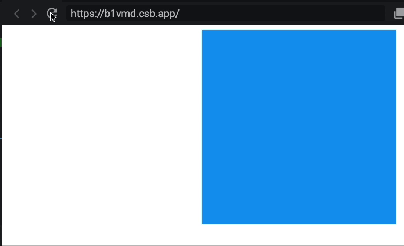
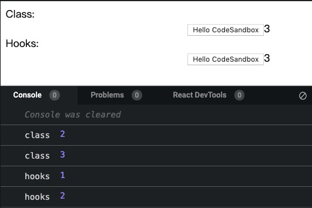
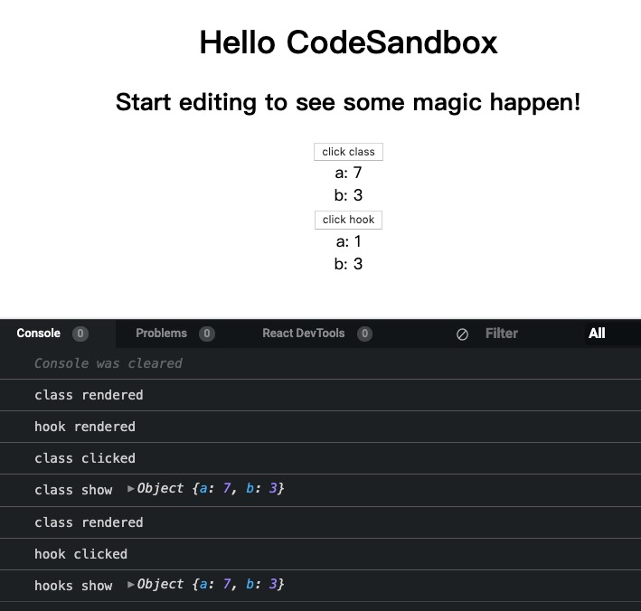

关于 useLayoutEffect 和 useEffect 的区别
文章目录
作用其实和useEffect差不多，只是useLayoutEffect是在 DOM 变化后同步触发的（与componentDidMount和componentDidUpdate触发时机一致）。可以使用useLayoutEffect在 DOM 变化后同步获取布局。在useLayoutEffect内部的更新会在 DOM 更新完成后立即执行，但是会在浏览器绘制前进行。
使用
useEffect可以避免不必要的渲染阻塞。（也是跟componentDidMount和componentDidUpdate区别之一）。
更新过程大致如下：
useEffect |
useLayoutEffect |
|---|---|
| 触发一次渲染 | 触发一次渲染 |
| React 渲染组件（调用 render） | React 渲染组件（调用 render） |
| 屏幕更新 | 调用useLayoutEffect，React 会等它执行完 |
调用useEffect |
屏幕更新 |
可以看这个例子
使用useEffect的话在刷新的时候会看到marginLeft生效的闪烁，但是useLayoutEffect就木有。

关于useState和setState的区别
首先，Hooks 是闭包啊
见这个例子
我们都知道，setState是异步更新的，但是在异步代码，如setTimeout中：
|
|
直接打印就是更新完的值了！但是 Hooks 中就不一样了！打印出来的还是上一次值，这是因为 Hooks 是闭包啊！！

其次，hooks 内部会进行Object.is的比较
又是一个例子！
首先要说这不是推荐的写法，因为违反了源数据不可变。
但是在点击按钮的时候会发现每次点击"class rendered"都会被打印出来，“hooks rendered"却没有打印，且页面也没有更新，是因为 hooks 内部进行了Object.is的浅比较啊，认为数据源木有变化，但是通过打印能看出数据已经变化啦。

参考资料
文章作者 youting
上次更新 2019-12-02